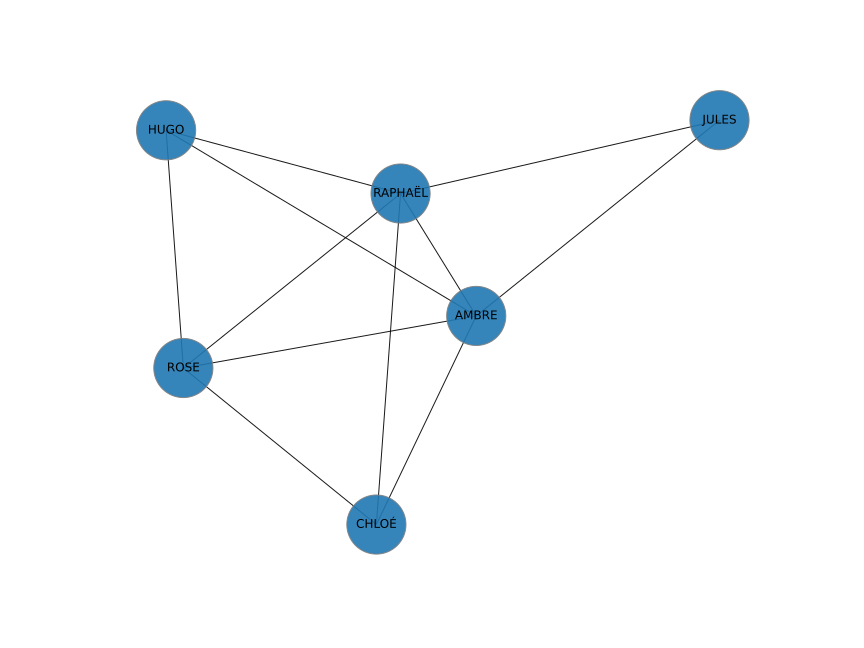

Programme Officiel
| Contenus | Capacités attendues |
|---|---|
| Identité numérique, e-réputation, identification, authentification | Connaître les principaux concepts liés à l’usage des réseaux sociaux. |
| Réseaux sociaux existants | Distinguer plusieurs réseaux sociaux selon leurs caractéristiques, y compris un ordre de grandeur de leurs nombres d’abonnés. Paramétrer des abonnements pour assurer la confidentialité de données personnelles. |
| Modèle économique des réseaux sociaux | Identifier les sources de revenus des entreprises de réseautage social. |
Rayon, diamètre et centre d’un graphe Notion de « petit monde » Expérience de Milgram |
Déterminer ces caractéristiques sur des graphes simples. Décrire comment l’information présentée par les réseaux sociaux est conditionnée par le choix préalable de ses amis. |
| Cyberviolence | Connaître les dispositions de l’article 222-33-2-2 du code pénal. Connaître les différentes formes de cyberviolence (harcèlement, discrimination, sexting…) et les ressources disponibles pour lutter contre la cyberviolence. |
Les réseaux sociaux sont des applications basées sur les technologies du Web qui offrent un service de mise en relation d’internautes pour ainsi développer des communautés d’intérêts.
Vidéo servie sans cookie via Project Segfault
Identité numérique
Lorsqu’on utilise un réseau social, celui-ci nous demande de créer un compte pour nous identifier.
À chaque interaction avec le réseau, nous devons nous authentifier grâce à un mot de passe par exemple.
Vous obtenez alors une identité numérique qui permet d’associer une personne physique ou morale avec un compte de réseau social.
- @POTUS: le président des États-Unis.
- @taylorswift13: …
- @Cristiano: …
Voir cet article pour une liste à jour des personnes les plus suivies sur Twitter.
Lorsque nous sommes identifiés, nous laissons des traces sur le web qui vont façonner notre cyber-réputation.
- Cyber-réputation
-
Réputation d’une entité (personne physique ou morale, marque, produit) en fonction des traces la concernant, trouvables sur le Web.
Graphe social
Vocabulaire
Dans un graphe social, on représente:
- Les personnes par des ronds: les sommets,
- Leurs relations par des traits: les arêtes.

Représentations des liens entre personnes
Un graphe peut-être décrit par un tableau dans lequel on va porter les relations d’amitié entre les personnes.
| Jules | Hugo | Ambre | Raphaël | Rose | Chloé | |
| Jules | ||||||
| Hugo | ||||||
| Ambre | ||||||
| Raphaël | ||||||
| Rose | ||||||
| Chloé |
Rayon, diamètre et centre d’un graphe
Pour mesurer les caractéristiques d’un graphe, on mesure les distances entre les nœuds.
La distance entre deux sommets dans un graphe est définie par la longueur d’un plus court chemin entre ces deux sommets.
Il peut être commode de remplir un tableau de distances pour caractériser le graphe.
| distance | Jules | Hugo | Ambre | Raphaël | Rose | Chloé |
| Jules | 0 | |||||
| Hugo | 0 | |||||
| Ambre | 0 | |||||
| Raphaël | 0 | |||||
| Rose | 0 | |||||
| Chloé | 0 |
- Diamètre
-
La plus grande distance possible qui puisse exister entre deux de ses sommets.
- Rayon
-
La plus petite distance à laquelle puisse se trouver un sommet de tous les autres.
- Centre
-
Le ou les nœuds distants d’au maximum un rayon des autres.
Pour déterminer ces caractéristiques on mesure la distance maximale de chaque nœud aux autres (on parle d’excentricité).
| distance | Jules | Hugo | Ambre | Raphaël | Rose | Chloé |
| distance maximale (excentricité) |
Déterminer le rayon, le diamètre et le centre du graphe précédent.
Les petits mondes
Sur les réseaux sociaux actuels, 3,5 personnes en moyenne séparent deux personnes choisies au hasard. On est donc effectivement connecté au monde entier.
Cependant, de par la conception des algorithmes de recommandations, ces réseaux nous présentent souvent des contenus de personnes qui nous ressemblent et qui pensent comme nous ce qui « étonnamment » nous empêche d’être au contact des autres et de leurs différences. On reste dans notre petit monde.